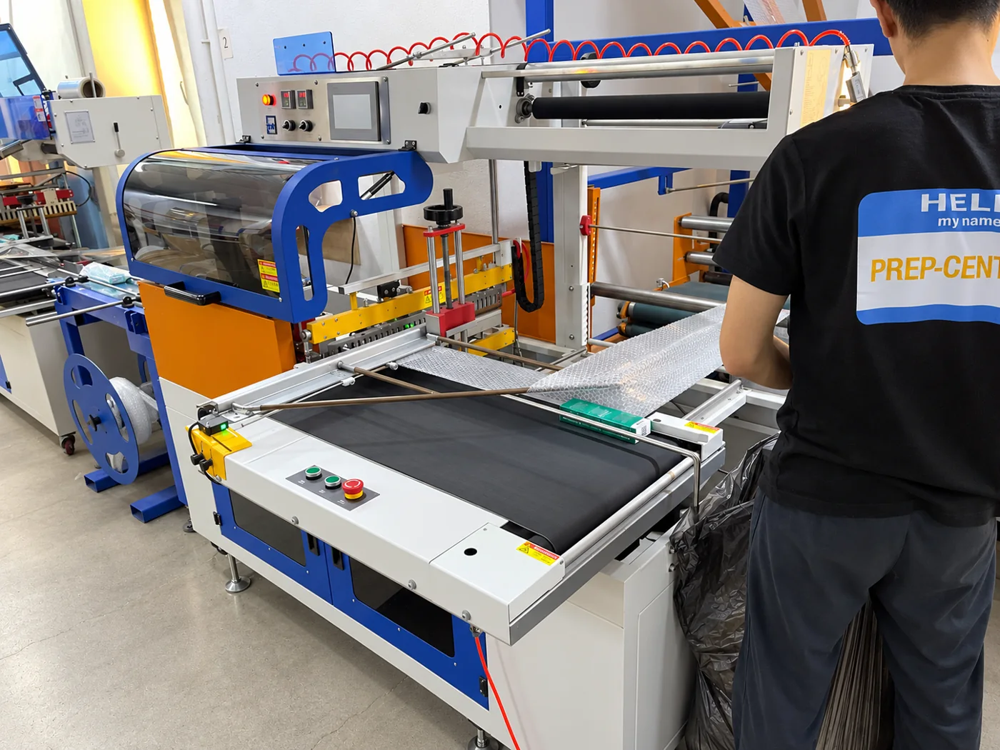
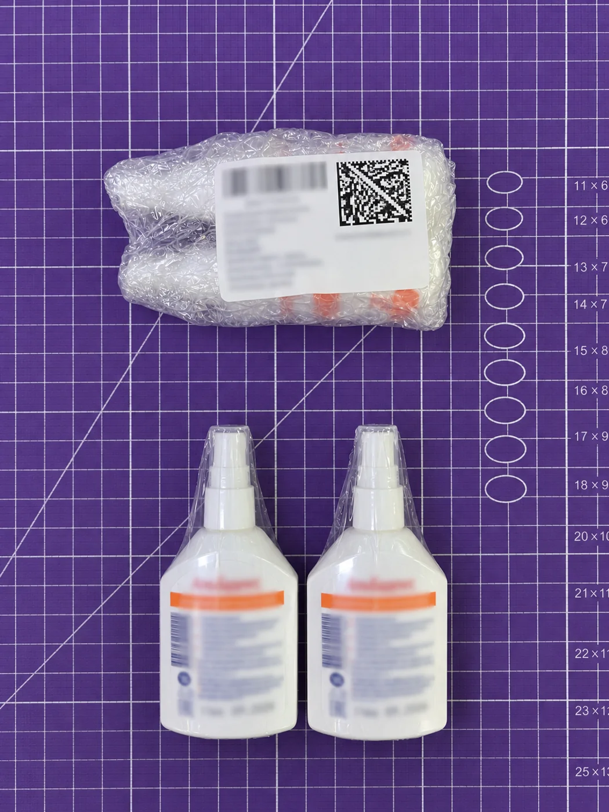
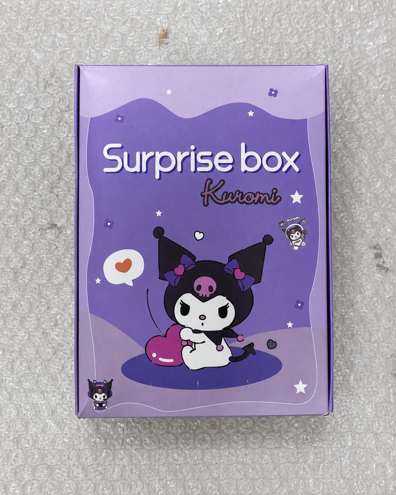
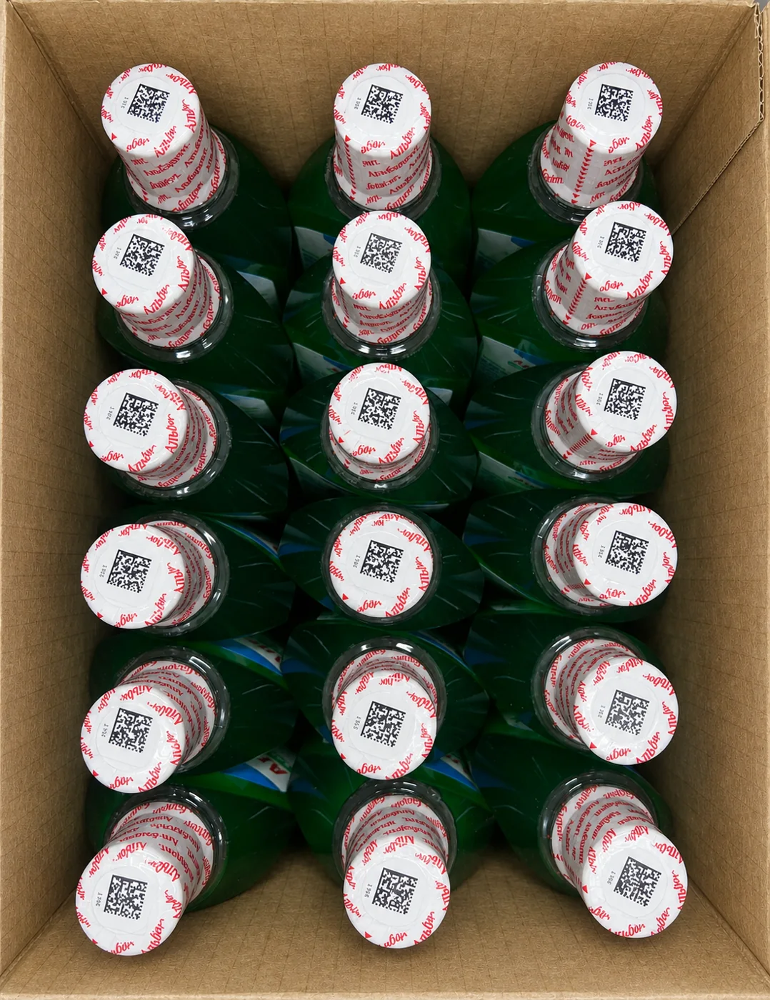
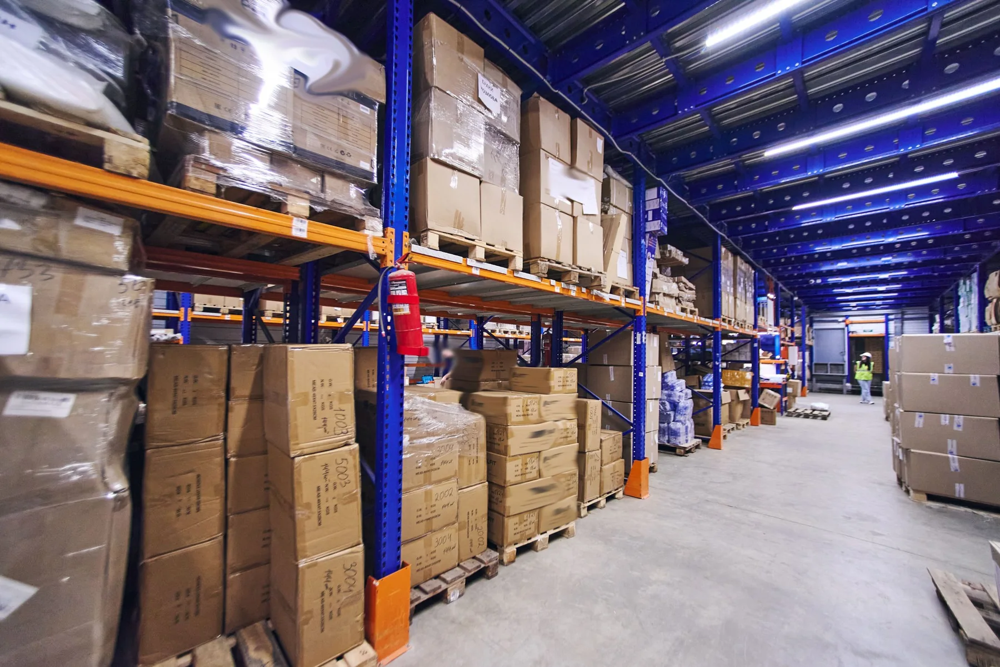
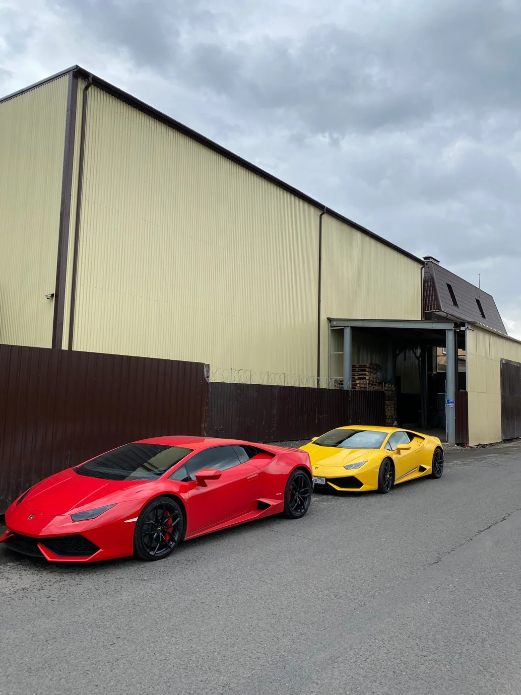

Порошок от муравьев
10 000 шт.180 000 рублей
3дня от приемки до отгрузки
Состав работ
- Приемка
- Сортировка
- Воздушно-пузырьковая пленка
- Термоусадочная пленка
- Маркировка
- Маркировка QR-код
18 рублей / ед. товара
Московская область, г. Пушкино,
ул. Новая, д. 10
Для тех, кто считает цифры.
Приёмка, сортировка и отгрузка 20 000 единиц в смену.
Персональный менеджер, Честный знак, автоматизация WMS, контроль 24/7 - без потерь, с максимальной скоростью.

Подписываем договор и создаем Ваш личный кабинет в системе складского учета
02Получаем ваш груз и выполняем приемку по местам
03Принимаем товары поштучно в систему учета
04Получаем и выполняем ТЗ на обработку товара
05Получаем заявку на отгрузку и обрабатываем заказ
06Принимаем остатки товаров на ответственное хранение
07Все передвижения товаров вы видите в личном кабинете
3дня от приемки до отгрузки
4дня от приемки до отгрузки
5дня от приемки до отгрузки
6дня от приемки до отгрузки
7дня от приемки до отгрузки
1дня от приемки до отгрузки
Последовательная линия: ВПП, термоусадка и дубликат заводского КИЗ на внешнем слое. Технологический кейс с 7 реальными фотографиями.
Подробнее ↗
Сканирование каждого вложения, связь кодов в WMS МПФИТ, общая этикетка и файл соответствий для клиента. Технологический кейс с реальными фотографиями.
Подробнее ↗
Сборка подарочных наборов из 24 комплектующих. Более 144 000 единиц обработано за 5 рабочих дней.
Подробнее ↗
Индивидуальная упаковка в ВПП и дублирование кода «Честного знака» на внешний слой упаковки.
Подробнее ↗Более 100 отзывов о работе Преп-Центра в Яндексе
Лучший фулфилмент для маркетплейсов Общение 24/7 с живыми людьми, полная отчетность по каждому этапу обработки товара Отгрузки фбс каждый день вайлдберриз озон, гениальные решения по упаковке, которые экономят уйму денег
Смотреть отзыв в Яндекс ↗В Преп Центре потрясающие ребята! Моментальный контакт, все время на связи – ответили на все вопросы, даже самые глупые))) товар упаковали качественно, отвезли оперативно. Минус головная боль, надеюсь на долгосрочное сотрудничество. Рекомендую!!!
Смотреть отзыв в Яндекс ↗Хороший фул филмент, высокая скорость обработки запросов, качественная сборка и упаковка товаров. Приветливый персонал. Довольна, что выбрала данную компанию в качестве партнера для комплектации и доставки моих товаров на склады маркетплейсов.
Смотреть отзыв в Яндекс ↗Нашёл с оптимальными ценами и сроками. Приехал посмотрел, всё понравилось. Склад чистый, тёплый, всегда можно приехать. Общительные менеджеры и руководство.
Смотреть отзыв в Яндекс ↗Оперативная и профессиональная команда помогла нам успешно справиться с неожиданными трудностями после пожара в складах Вайлдберриз. Они оперативно приняли горящую партию товаров, упаковали и отгрузили их в соответствии с правилами маркетплейса, обеспечив день-в-день отправку и стоимость с доставкой 'под ключ'.
Смотреть отзыв в Яндекс ↗Преп-центр - мой надежный партнер на Яндекс Маркете! Благодаря их опытной команде могу быть уверена в качестве обслуживания и безопасности моих товаров. Профессионализм на высшем уровне!
Смотреть отзыв в Яндекс ↗Преп-Центр с 2019 года занимается фулфилментом и подготовкой товаров для маркетплейсов. На складе площадью 1560 м² в Пушкино мы принимаем, храним, проверяем, упаковываем и маркируем товары, комплектуем наборы и формируем поставки по схемам FBO и FBS.
Работаем с регулярными заказами и отдельными партиями. Для подходящих поточных операций производительность — до 20 000 единиц за 12-часовую смену.
Подробнее о Преп-Центре

Мы предоставляем современную систему складского учета с личным кабинетом и интеграцией с маркетплейсами, что позволяет вам всегда держать руку на товарном пульсе и обеспечивает полную прозрачность движения товаров. Благодаря автоматизации процессов, работа по ФБС осуществляется без вашего участия, экономя ваше время и ресурсы. Подробнее: как устроен складской учет в Преп-Центре
Мы предлагаем сотрудничество на условиях полной материальной ответственности, закрепленной в договоре, с оплатой по безналичному расчету. Это обеспечивает юридически безопасное партнерство с четко прописанными обязательствами сторон, гарантируя прозрачность и надежность взаимодействия.
Ваш срочный заказ будет обработан в приоритетном порядке, увеличение конкурентоспособности вашего товара, оперативное реагирование на срочные заказы
Индивидуальный сервис, более быстрая обработка запросов, удобство и комфорт, более эффективные решение за счет понимания вашего бизнеса
Профессионализм и надежность, эффективность и точность, стабильность и непрерывность обслуживания, большая ответственность, внимание к мелочам
Наша компания гарантирует постоянство и стабильность, предлагая клиентам многолетний опыт и надежность, основанные на отработанных процессах. Мы стремимся к долгосрочному партнерству, обеспечивая высокое качество услуг и удовлетворенность каждого клиента.
Наличие собственного склада позволяет нам минимизировать издержки, что делает наши цены более выгодными для клиентов, обеспечивая при этом высокое качество услуг и надежность хранения ваших товаров.
Круглосуточное видеонаблюдение на складе и рабочих местах с хранением записей 28 дней обеспечивает прозрачность, безопасность товаров и оперативное решение спорных ситуаций для поставщиков маркетплейсов.
Автоматическое упаковочное оборудование с производительностью до 20 000 единиц товара в сутки позволяет значительно увеличить эффективность без потери качества упаковки. Это решение обеспечивает возможность оперативных экспресс-отгрузок даже в форс-мажорных ситуациях, таких как стокаут, гарантируя бесперебойность ваших продаж.
Полный прайс Преп-Центра: 134 тарифа на приемку, сортировку, маркировку, упаковку, хранение, FBO/FBS и доставку на склады маркетплейсов.
Цены указаны без НДС. Условия, минимальные объемы и особенности расчета указаны на странице тарифов.
Заключить с нами договор о предоставлении услуг. Прислать груз, предоставить справочник товаров и дождаться приемки груза нашим складом. Приемка груза в среднем занимает 1 рабочий день.
Товар должен быть легальным и соответствовать общим требования безопасности.
Идентификация товара на складе происходит с помощью уникальных штрихкодов или по визуальным признакам, которые присваиваются каждой единице товара и позволяют отслеживать его местоположение, движение и статус в режиме реального времени.
Мы упаковываем товары в соответствии с вашим техническим заданием и заявкой, используя оптимальные материалы и методы для обеспечения сохранности груза при транспортировке.
Груз хранится на складе в безопасных условиях: с контролем температуры, влажности и круглосуточным видеонаблюдением, обеспечивая полную сохранность товаров.
Оплата за хранение рассчитывается автоматически в системе складского учета на основе занимаемого объема товара в литрах, умноженного на установленную стоимость за 1 литр в сутки.
Мы несем полную материальную ответственность за вверенный нам товар.
Да, мы забираем возвраты и выкупы с партнерского пвз.
Мы оформляем логистику в регионы на склады маркетплейсов ежедневно от 1 коробки по нашему графику.
В любой удобный день. Ежедневно с 08:00 до 20:00.
Записаться на экскурсию
Московская область,
г. Пушкино, ул. Новая, д. 10